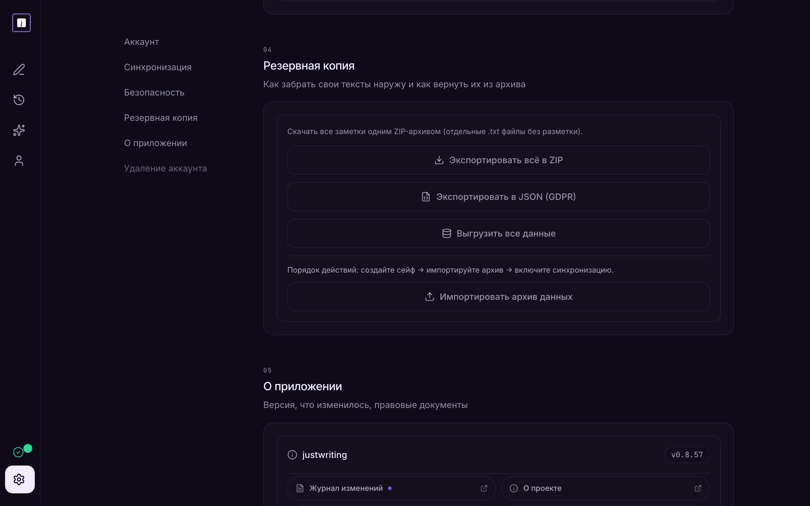
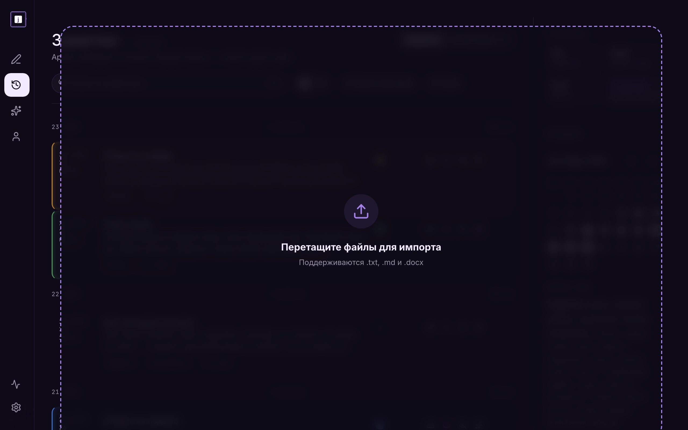

Резервные копии и импорт
Как сохранить все заметки в файл, перенести их на другое устройство и добавить тексты, написанные в других приложениях.
На этой странице
Зачем делать копию
Заметки живут в браузере на этом устройстве. Облако — их вторая копия, если синхронизация включена (подробнее — в разделе «Облако и устройства»). Если облако выключено, а данные сайта в браузере стёрлись или устройство потерялось, заметок больше нигде не будет.
Резервная копия — файл, который лежит у вас. Его можно открыть без приложения, унести на флешку или перенести на новый компьютер. Сделать её — дело минуты.
Раздел «Резервная копия»
Откройте Настройки (внизу меню слева) и найдите раздел Резервная копия. В нём четыре кнопки: три делают файл, четвёртая загружает его обратно.

Экспорт в ZIP
Экспортировать всё в ZIP — самый простой способ сохранить свои тексты. Скачивается архив, внутри каждая заметка лежит отдельным файлом .txt, без разметки. Имя файла начинается с даты заметки, дальше её название.
Такие файлы открываются где угодно: в «Блокноте», в Word, на телефоне. Заметки, которые хранятся только в облаке, приложение перед выгрузкой скачает само.
Когда всё готово, появится «Экспортировано заметок: N». Если заметок нет совсем — «Нет заметок для экспорта».
Экспорт в JSON (GDPR)
Скачать заметки в JSON (GDPR) выгружает в один файл в машиночитаемом виде имя и e-mail из профиля, а также заметки с названиями, текстом, датами, тегами и настроением. Это копия на случай, если вы хотите изучить их или передать в другой сервис.
Для переноса обратно в justwriting этот файл не предназначен. Для переноса есть «Выгрузить все данные».
Выгрузить все данные
Выгрузить все данные делает полную копию всего, что есть на этом устройстве: заметки, их версии и данные разбора ИИ. К каждой записи приложение добавляет контрольную сумму, чтобы при загрузке обратно проверить, что текст не испорчен. Этот файл нужен, чтобы перенести записи на другое устройство или восстановить их.
Под кнопкой появится итог: «Выгружено: N заметок, N версий, N записей». Если что-то выгрузить не удалось, ниже красным будет «Пропущено записей: N».
- В файл попадает только то, что есть на этом устройстве. Заметок с пометкой «только в облаке» в нём не будет. Сначала скачайте их на устройство — как это сделать, написано в разделе «Облако и устройства».
- Файл называется justwriting-backup и дата. Файл из «Скачать заметки в JSON (GDPR)» называется иначе — justwriting-export и дата, — но оба с расширением .json: для переноса нужен именно justwriting-backup.
Импортировать архив данных
Импортировать архив данных загружает на устройство файл, сделанный кнопкой «Выгрузить все данные». Другие файлы, в том числе JSON из «Скачать заметки в JSON (GDPR)», сюда не подходят. Размер файла — до 64 МБ.
Над кнопкой написан порядок действий: «создайте сейф → импортируйте архив → включите синхронизацию». Так заметки не уйдут в облако незашифрованными. Пока сейф не создан, кнопка неактивна, а рядом висит предупреждение «Сейф ещё не создан…». Обычно сейф создаётся сам при первом входе в аккаунт; подробнее — в разделе «Пароли и шифрование».
Как перенести записи на другое устройство
- На старом устройстве откройте Настройки → Резервная копия и нажмите Выгрузить все данные.
- Перенесите файл на новое устройство сами: на флешке или через свой облачный диск.
- На новом устройстве войдите в тот же аккаунт и убедитесь, что сейф создан и открыт.
- Откройте Настройки → Резервная копия, нажмите Импортировать архив данных и выберите файл.
- Пока на кнопке написано «Проверяю и импортирую данные...», не закрывайте вкладку. Итог появится под кнопкой.
- Включите синхронизацию, если она нужна, — см. «Облако и устройства».
Что значат строки итога
| Строка | Что это значит |
|---|---|
| «Импортировано: N заметок, N версий, N записей» | Столько всего перенесено. Всё в порядке. |
| «Уже были на устройстве, пропущено: N» | Эти записи здесь уже есть, поэтому их не трогали. Так бывает, если загрузить тот же файл второй раз. Ничего не потеряно. |
| «Пропущено по другим причинам: N» | Эти записи перенести не получилось. Ниже списком перечислены причины. Если в списке есть заметки, которые вам нужны, напишите нам и приложите этот список. |
| «ПОВРЕЖДЕНО и не перенесено: N» | Текст этих записей в файле испорчен: контрольная сумма не сошлась. Они не перенесены. Сделайте выгрузку на старом устройстве заново и повторите импорт. |
| «Исключено по соображениям приватности: N записей» | Часть данных разбора ИИ намеренно не переносится. Тексты заметок это не затрагивает. |
| «Загружено в облако: N заметок (в очереди: N)» | Автосинхронизация включена, и сразу после импорта заметки отправились в облако. Те, что в очереди, уйдут чуть позже. |
| «Синхронизация выключена: N заметок сохранены только на этом устройстве» | Автосинхронизация выключена, поэтому в облако ничего не отправлялось. Чтобы отправить их, включите синхронизацию и нажмите Отправить все заметки в облако. |
| «Сейф заперт: N заметок сохранены локально и поставлены в очередь выгрузки» | Заметки уже на устройстве. В облако они уйдут, когда вы откроете сейф, если включена автосинхронизация; иначе — кнопкой «Отправить все заметки в облако». |
| «Ошибка отправки в облако (…)» | Заметки уже на устройстве, но облако не ответило. Они стоят в очереди и уйдут позже, если включена автосинхронизация. |
| «Ошибка импорта: …» | Файл не удалось прочитать. Чаще всего выбран не тот файл, например из «Скачать заметки в JSON (GDPR)». Проверьте, что это файл из «Выгрузить все данные». |
Одна заметка
Чтобы сохранить только одну заметку в TXT, Markdown, PDF или DOCX, откройте её предпросмотр на странице «Заметки» и нажмите кнопку экспорта. Подробности — в разделе «Заметки».
Импорт файлов из других приложений
Тексты из других программ можно добавить как новые заметки. Для этого перетащите файлы мышью прямо на страницу Заметки.
- Откройте страницу «Заметки».
- Перетащите на неё один или несколько файлов с компьютера. Появится рамка с надписью «Перетащи файлы для импорта».
- Отпустите файлы. Когда всё готово, появится «Успешно импортировано заметок: N».

Подходят файлы .txt, .md и .docx размером до 10 МБ каждый. Если какие-то файлы загрузить не удалось (другой формат, слишком большой размер), приложение напишет «Не удалось импортировать файлов: N». Если вы вошли в аккаунт, новые заметки отправятся и в облако.
Что выбрать
| Я хочу… | Что нажать |
|---|---|
| Почитать свои заметки на компьютере без приложения | Экспортировать всё в ZIP: получите обычные .txt |
| Перенести всё на другое устройство или сохранить копию для восстановления | Выгрузить все данные, потом Импортировать архив данных на новом месте |
| Получить свои заметки (заметки + имя/почта) в машиночитаемом виде | Скачать заметки в JSON (GDPR) |
| Перенести записи из другого приложения | Сохраните их как .txt, .md или .docx и перетащите на страницу «Заметки» |